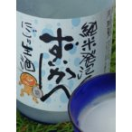

山岡酒造 瑞冠 純米発泡ずいかん にごり生酒720ml 要冷蔵 [箱なし]
山岡酒造 瑞冠 純米発泡ずいかん にごり生酒720ml 香りはあまり感じないが、爽やかな炭酸ガスがプチプチと伝わってくる 米の旨みを感じながら、シュワシュワとしたガスが食欲を沸き立てそうです 食前酒として最適だと思います まさに『スパークリング ジャパニーズ ワイン』ではないでしょうか 純米仕込みの活性生酒です。 お酒の甘みと、爽やかな炭酸が、軽快な飲み口を演出します。 ＊開栓時に炭酸ガスと共にお酒が吹き出す事が有りますので、注意書きをよくお読みください 要冷蔵の為、クール便を使用いたします 原料米：広島県産中生新千本 精米歩合：６5％ 原材料名：米(国産)・米麹(国産米) 日本酒度：-10 酸度：1.7 酵母：協会1401 アルコール：15度以上16度未満 杜氏：畑中裕次 甘辛：やや辛口